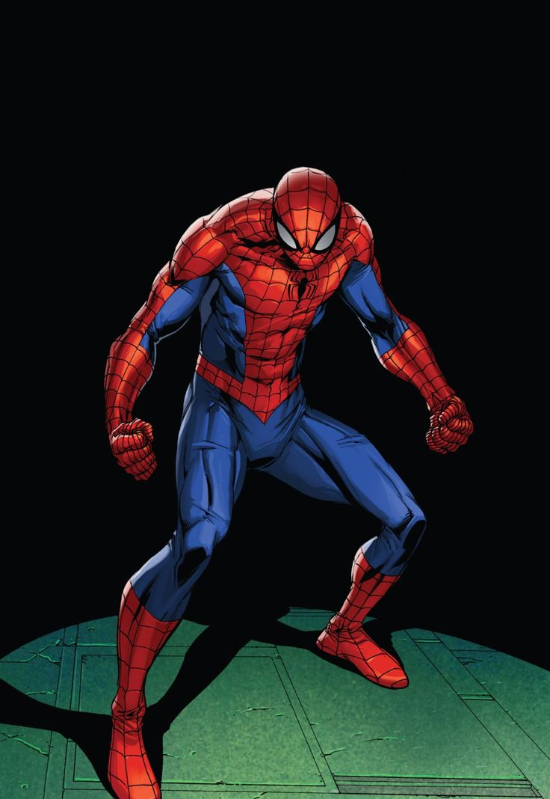
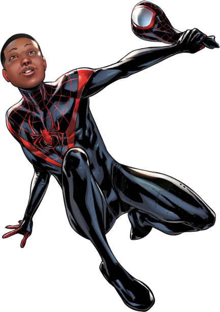
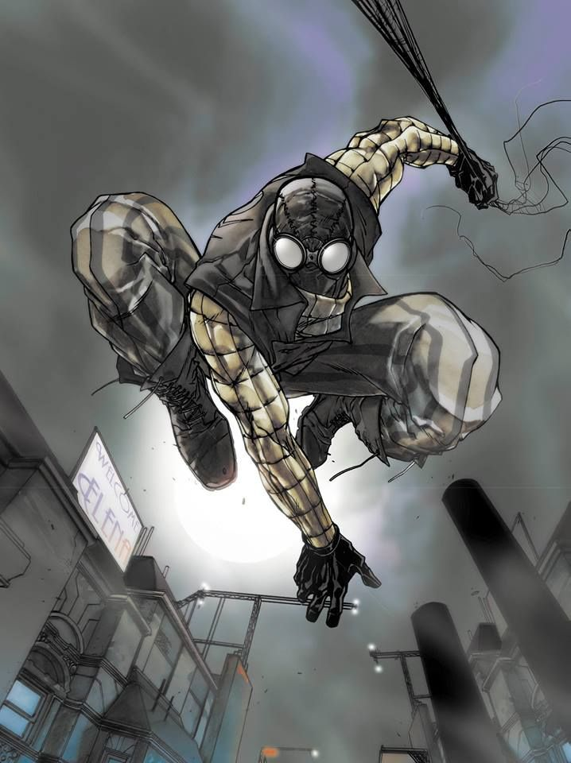
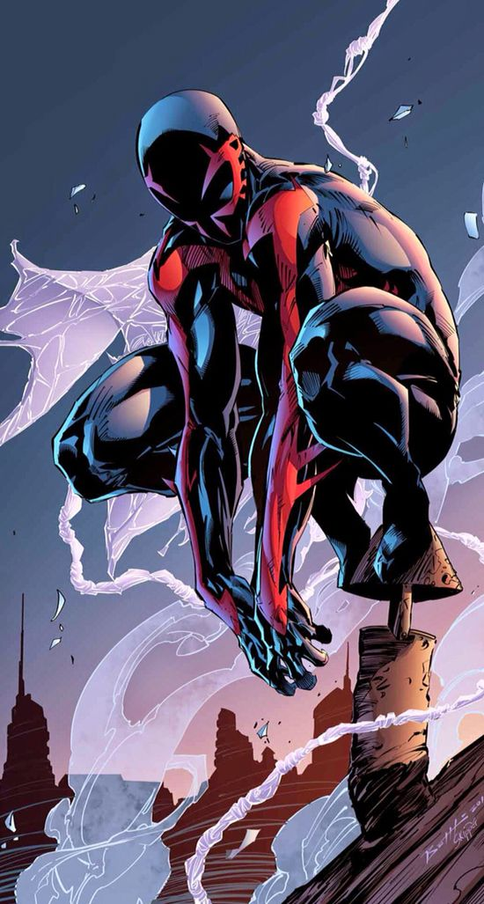
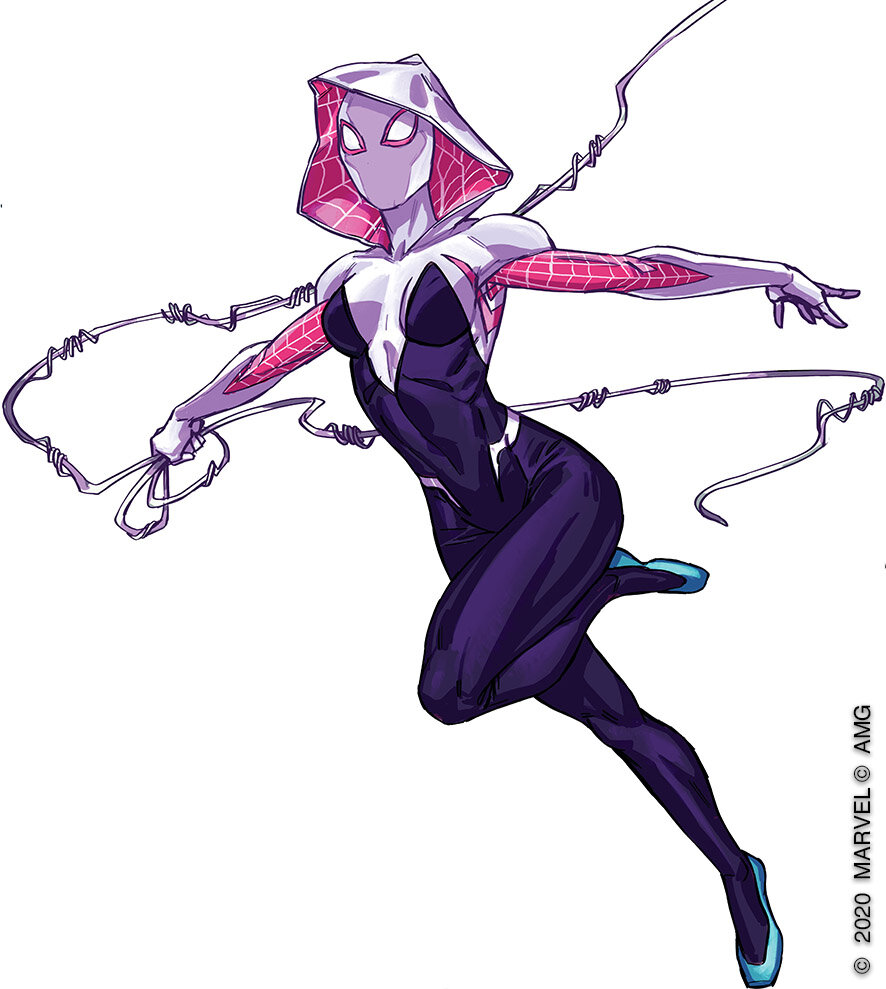
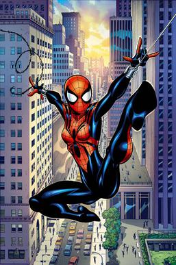

| Naziv Spider-Mana | Opis Spider-Mana | Osoba ispod maske | Godine | Sposobnosti | Datum rođenja | Datoteka kostima | URL stranica | Neprijatelji njegovog svemira | Sklon šali |
|---|---|---|---|---|---|---|---|---|---|
| Spider-Man (Earth 616) | Ponekad student, ponekad znanstvenik i ponekad fotograf, Peter Parker je superheroj poznat pod aliasom "Spide-Man" Odgojen od strane ujaka i ujne Ben i May Parker. Ugrišen od radioaktivnog pauka na festivalu znanosti. U početku je koristio moći za zabavu, no kad je ubijen njegov ujak Ben, odluči svoje moći iskoristiti za borbu protiv zla. | Peter Parker | 25 | Penjanje po zidovima, supersnaga, superbrzina, superljudska izdržljivost, poboljšano zacljeljivanje, predosjećaj opasnosti | 10.8.1985. |  | https://marvel.fandom.com/wiki/Peter_Parker_(Earth-616) | Vulture, Venom, Kraven, Green Goblin, Mysterio, Sandman, Electro... | 5 |
| Miles Morales Spider-Man (Earth-1610) | U alternativnoj stvarnosti, Miles Morales postaje Spider-Man nakon smrti Peter Parker-a. Skriva svoj identitet od roditelja, no pouzdaje se u svojeg priajtelja Ganke-a u članove Super Hero zajednice. | Miles Morales | / | Penjanje po zidovima, supersnaga, superbrzina, superljudska izdržljivost, poboljšano zacljeljivanje, predosjećaj opasnosti, kamuflaža, energetski udari | / |  | https://www.marvel.com/characters/spider-man-miles-morales/in-comics/profile | Electro,Kangaroo,Hydra, Aaron Davis,Doctor Doom... | 3 |
| Spider-Man Noir (Earth-90214) | Mladom Peter Parkeru smeta nepravda depresije. Njegova ljutnja samo je povećana s ciljem da dokaže da je smrt ujaka Bena uzrokovana Goblinom. Vođen vrijedonstima ujaka i ujne, Peter vjeruje da treba maknuti moć onima kojima se ne može vjerovati. | Peter Parker | / | Poboljšana snaga, brzina, refleksi, brzina i izdržljivost, pucanje tekuće sile iz zapešća,predosjećaj opasnosti | / |  | https://www.marvel.com/characters/spider-man-noir | Chameleon, Doctor Octopus, Crime Master, Karn, Morlun, Norman Osborn, Mysterio... | 1 |
| Spider-Man 2099 (Earth-928) | Mlad Miguel O'Hara odgojen je u alternativnoj stvarnosti u budućnosti pri završetku "Herojskog doba" od majke Conchate, mlađeg brata Garbijela i oca George-a. Godinama kasnije, nakon što umre subjekt eksperimenta, Miguel se suočava sa svojim šefom koji mu posluži drogu Rapture. Miguel vrati drogu, no droga je bila novi eksperiment koji pretvori DNA čovjeka da bude 50% od pauka. | Miguel O'Hara | / | superljudska snaga,brzina,refleksi,izdržljivost i brzina, noćni vid, inteligencija genija, privremena paraliza iz očnjaka na prstima, organska mreža, neuništiv kostim | / |  | https://www.marvel.com/characters/spider-man-2099-miguel-o-hara | Carnage, Blitzgeist,Daemos,Data Pirate,Chernobog,Doctor Cronos,Doctor Octopus 2099, Electro 2099... | 2 |
| Ghost Spider (Earth-65) | Gwen Stacy je poznata Spider-Woman na zemlji 65 gdje ju je ugrizao radioaktivni paučnjak. Nakon smrti prijatelja Peter Parker-a, njezin otac odluči uloviti Ghost Spider-a. Pomirena smrću prijatelja, Gwen nastavlja biti Ghost Spider onima u potrebi. | Gwen Stacy | / | Penjanje po zidovima, poboljšana snaga,brzina,refleksi,izdržljivost, predosjećaj opasnosti | / |  | https://www.marvel.com/characters/ghost-spider-gwen-stacy/in-comics/profile | Daredevil,Punisher,Vulture,Rhino, Aaron Davis, Carnage, Gog, J.J.J., Kindred... | 3 |
| Spider-Girl (Earth-982) | May Parker je prvo dijete Peter i Mary Jane Parker-a. Nakon što se ujedini sa svojom obitelji tokom njezie otmice, Peter Parker izgubi nogu u bitci sa Grenn Goblinom. Čvrsto odlučuje prestati superjunaštvo i fokusira se na ulogu oca. Nasuprot očekivanjima,May je počela razvijati svoje moći u 15-oj godini života. Kada Green Goblin ponovno napadne, May uzme stvar u svoje ruke i nastavlja borbu protiv zla u potpori svojih roditelja. | May "Mayday" Parker | / | predosjećaj opasnosti, magnetizam, superljudska snaga,brzina, penjanje po zidovima, poboljšano zacjeljivanje | / |  | https://marvel.fandom.com/wiki/May_Parker_(Earth-982) | Aftershock, Angel Face, Apox, Canis, Bitter Frost, Carnage, Claw, Charlie Philips... | 4 |
Popis
Prijava